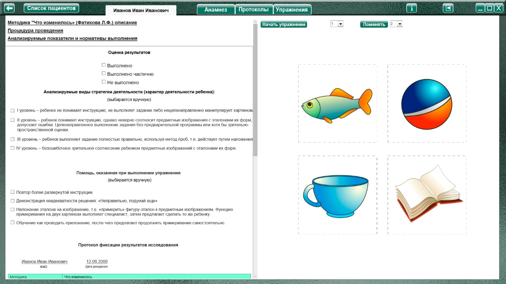
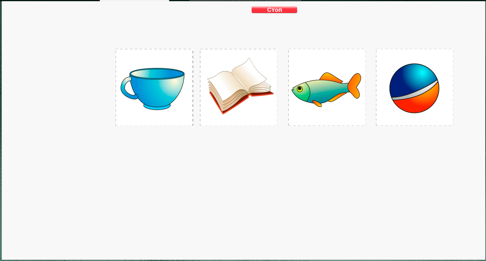

Методика «Что изменилось» (Фатихова Л.Ф.)
Методика «Что изменилось» (Фатихова Л.Ф.) описание
Процедура проведения.
Перед ребенком кладут в ряд карточки и предъявляют следующую инструкцию: «Посмотри внимательно на эти картинки и запомни их. Сейчас ты закроешь глаза, а я какие-то картинки
перепутаю. Ты положишь картинки так, как они лежали в самом начале». Местами меняются только две картинки.
Анализируемые показатели и нормативы выполнения
I уровень – ребенок не понимает поставленной перед ним задачи, хаотично манипулирует картинками (0 баллов).
II уровень – ребенок понимает инструкцию, однако неверно выполняет задание (0 баллов).
III уровень – ребенок выполняет задание верно (3 балла).
Виды помощи
Каждый вид помощи уменьшает количество баллов в серии на 0,5 балла.
1. При I уровне выполнения экспериментального задания предъявляется более подробная и поясняющая инструкция, используются жесты.
2. При II уровне выполнения ребенка оповещают о неадекватном результате: «Неправильно, подумай еще». В ситуации повторной ошибки ребенка ему предъявляется следующий вид помощи.
3. Повторный показ ряда картинок с отражением их в активной речи ребенка (испытуемого просят назвать показанные картинки). Далее процедура исследования та же.
4. При непосредственном наблюдении ребенка все те же картинки меняются местами и предлагается положить их на место.
Если ни один из предложенных видов помощи не способствовал правильному выполнению задания, результат оценивается в 0 баллов. Максимальное количество баллов за две серии – 4 балла.
Примечание: Количество картинок может изменяться произвольно экспериментатором в зависимости от диагностических задач, от возраста ребенка и уровня его психического развития.
Анализ результатов
Группы детей |
Баллы |
Нормально развивающиеся дети |
2,5 – 4 |
Дети с задержкой психического развития |
2 – 3,5 |
Дети с умственной отсталостью |
0 – 2,5 |
Нормально развивающиеся дошкольники не испытывают трудностей при выполнении данного задания. Они понимают поставленную задачу и, как правило, самостоятельно и безошибочно
указывают место, на котором располагались картинки первоначально.
Дошкольники с ЗПР понимают первоначальную инструкцию и достаточно успешно выполняют задание как первой серии методики, так и второй. При ошибке выполнения для них достаточно указания на нее (второй вид помощи), чтобы правильно выполнить задание.
Дошкольникам с умственной отсталостью чаще всего характерны I и II уровни выполнения задания. Дошкольники, которые не понимают поставленной задачи, – это дети с умеренной степенью умственной отсталости или с умственной отсталостью, сопровождающейся системным недоразвитием речи тяжелой степени. Для правильного выполнения задания детям в зависимости от степени умственной отсталости и уровня речевого недоразвития требуются, как второй, третий, так и первый, четвертый виды помощи.
Оценка результатов
Характер деятельности ребенка
Уровень выполнения
Виды возможной помощи:
Протокол фиксации результатов исследования
_________________________________ _______________
ФИО Дата рождения
Методика |
Что изменилось |
||||
Автор методики (адаптации, модификации) |
Фатихова Л.Ф. |
||||
Цель: |
выявление уровня и особенностей развития внимания, способности запоминать и удерживать в сознании ряд объектов. |
||||
Дата / специалист |
|||||
Результат: баллы (макс.) / вывод об уровне развития |
|||||
Примечание |
|||||
Процесс выполнения диагностического задания |
|||||
№ серии |
Характер выполнения задания |
Виды помощи |
Баллы |
1 |
|||
2 |
|||
Итоговая оценка |
|||

Логика заполнения протокола
Заполняется автоматически
Имя специалиста – логин при входе в программу.
Дата –дата и время прохождения упражнения в формате дд.мм.гггг.
Результат: баллы (макс.) / - кол-во баллов дублируется из ячейки «Итоговая оценка» (макс. 4).
«Характер деятельности», «Виды помощи» - заполняются в зависимости от выбора специалистом соответствующих пунктов в разделе «Оценка результатов» Характер деятельности ребенка вносится без значения баллов (в скобках).
Баллы – числовые значения (в скобках) из пунктов «Характер деятельности» (уровень выполнения). За каждый добавленный вид помощи оценка снижается на 0,5 баллов. Если получаются отрицательные значения, то в ячейку «Баллы» вносится «0» баллов.
Итоговая оценка – сумма баллов за все упражнения. Заполняется после формирования протокола по всем выполненным заданиям по нажатию кнопки «Подвести итог».
Остальные ячейки заполняются специалистом самостоятельно.
Выполнение упражнения

Выбрать вариант задания для выполнения и нажать «Начать упражнение».

Выполнить задание согласно пункту «Процедура проведения». Картинки выстраиваются в ряд. После того, как ребенок запомнит их расположение, поменять картинки местами (ребенок не должен смотреть) при помощи мыши с зажатой левой кнопкой. После ребенок должен вернуть картинки в первоначальную последовательность. Когда специалист нажимает кнопку «Стоп» - открывается поле для оценки результата по 1 заданию.
При необходимости выбрать факт выполнения, характер деятельности, виды помощи, и нажать кнопку «Сформировать протокол». Произвести оценку результата (заполнить оставшиеся ячейки протокола) согласно пункту «Анализируемые показатели и нормативы выполнения».
Только после формирования протокола по выполненному заданию можно приступить к выполнению следующего!
После формирования протокола нужно выбрать в меню следующее задание и нажать «Начать упражнение»
После формирования протокола по всем выполненным заданиям, нажать кнопку «Подвести итог» под протоколом, чтобы заполнить ячейку «Итоговая оценка».